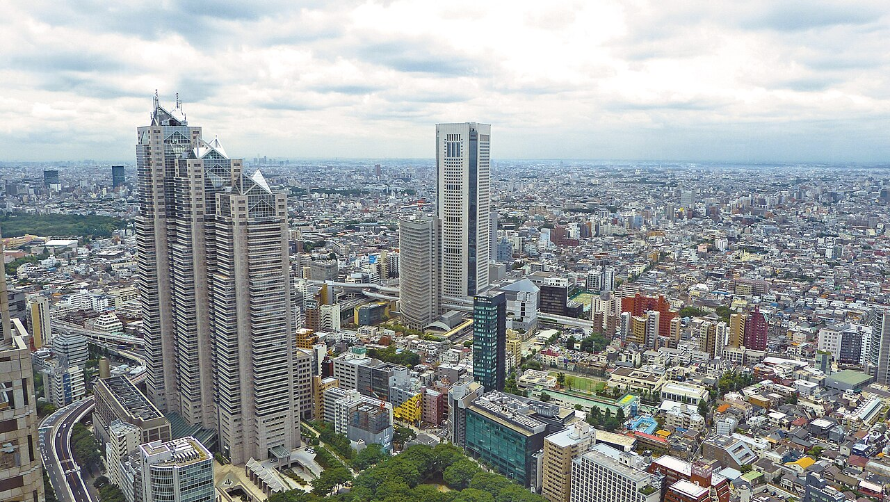
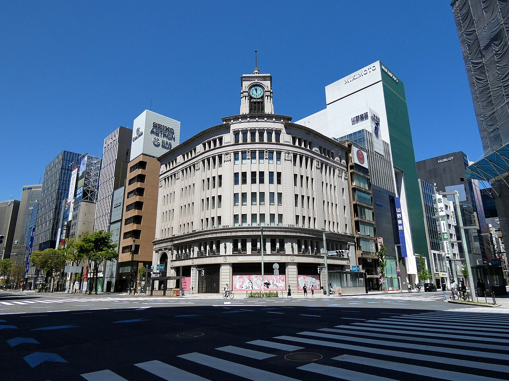
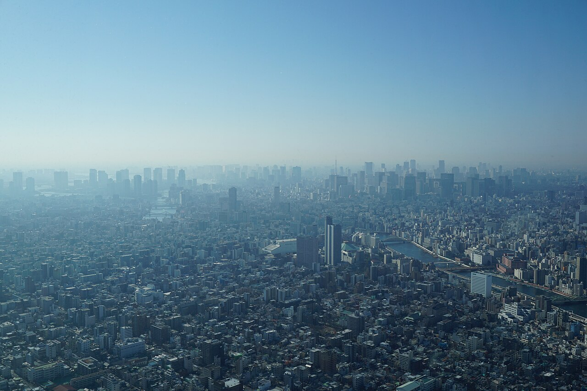
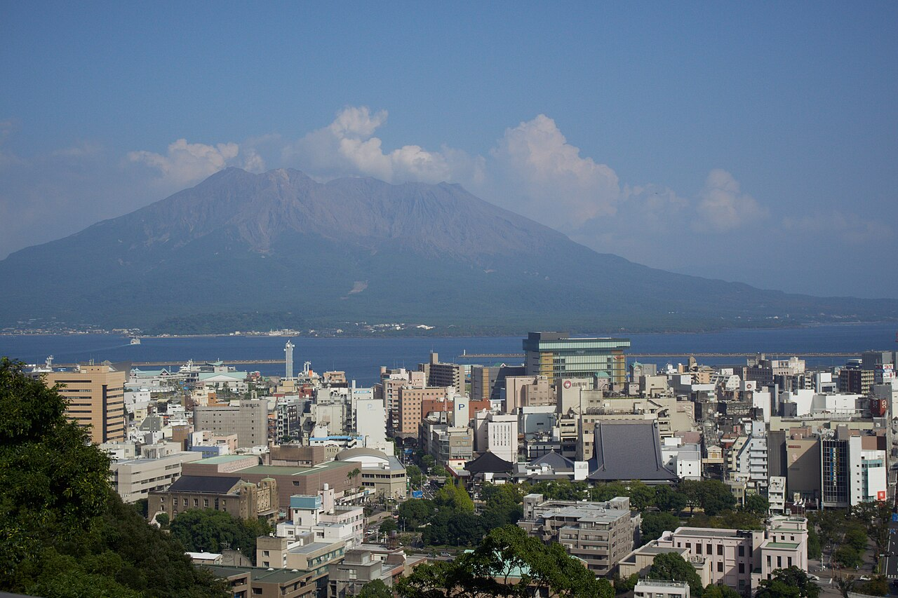
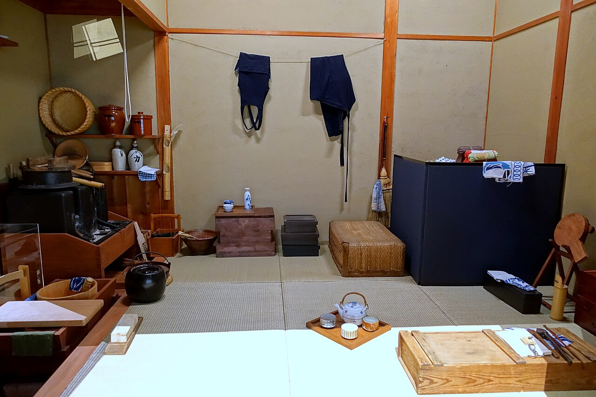
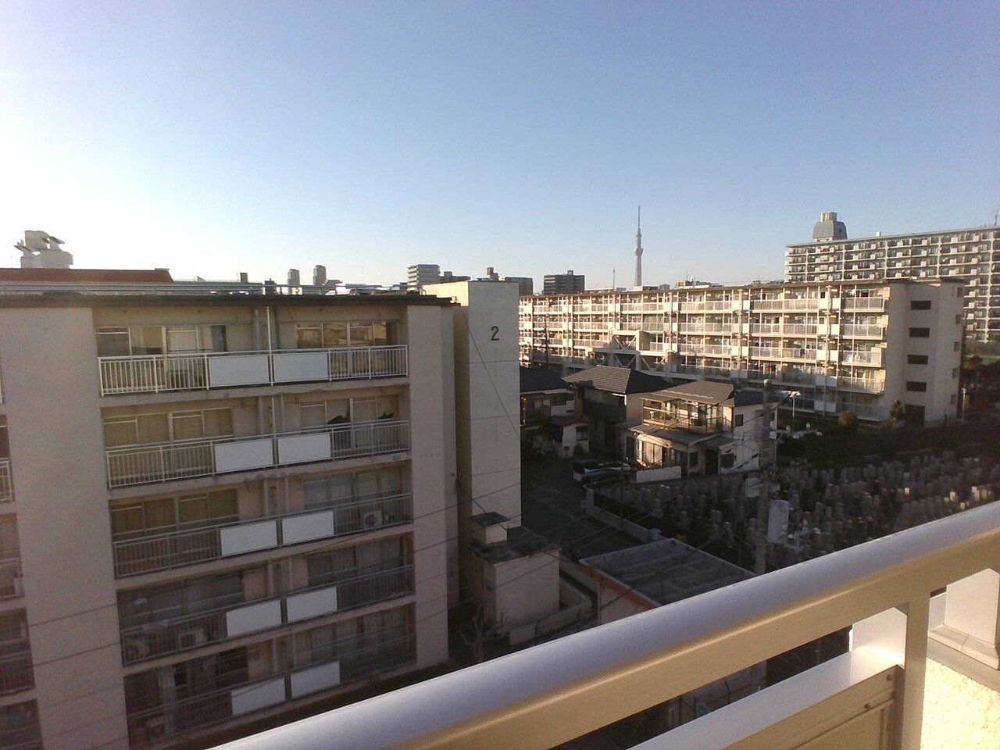
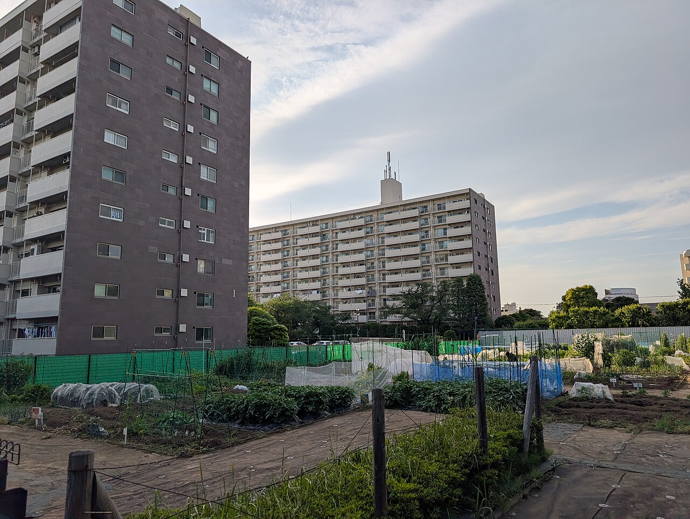

社会・経済 Society & Economy都会の家賃は、なぜ高い？
東京の借家の家賃は、平均で月8万円台。いちばん安い鹿児島県の2倍以上です。家賃の中に隠れた「土地の値段」から、駅への近さ、集まり続ける人、高く建てる工夫まで。3つの図で、都会の家賃が高いわけをのぞいてみませんか。
2026.10.23 UP 約5分で読める 文：SOMOSOMO編集部
写真：新宿の街並み／Jason Goh（2013年、CC0）
東京・銀座2丁目の中央通り。2026年7月1日時点の土地の値段を調べた「都道府県地価調査」で、この通りに面した土地は1㎡あたり5,250万円 とされました。この調査では、21年続けて全国でいちばん高い地点です。畳1枚（約1.6㎡）分なら、8,000万円を超えます。
住まいの値段にも、同じ傾向があります。2023年の国の調査では、東京都の借家（借りて住む家。アパートや賃貸マンションなど）の家賃は、畳1枚分の広さあたり月5,692円。全国平均の約1.7倍です。広さをそろえても、東京は高い。なぜ都会の家賃は、こんなに高いのでしょうか。
In a word
家賃には土地の値段 が含まれていて、仕事や駅に近い都会の土地は、使いたい人がとても多いのに、増やすことができない からです。建物を高くして土地を分け合っても、集まる人の勢いに追いつききれていません。
01
Land, Not Building
家賃を高くしているのは、建物より土地
大家さんが家賃で取り戻そうとしているお金は、大きく分けて2つあります。1つは建物の分 。建てる費用や、修理・掃除などの管理の費用です。もう1つが土地の分 。土地を買ったお金や土地の税金、「ほかの使い道なら得られたはずのお金」です。たとえば、同じ土地を駐車場にして貸せば、毎月お金が入ってきます。
建物を建てる費用は、資材や職人さんの手間で決まります。東京でも地方でも、何十倍もの差はつきません。ところが土地の値段は、場所によってけた違いに変わります。だから都心ほど、家賃の中で土地の分 が大きくなるのです。
Fig.01 家賃の中身をくらべると
土地の分
建物の分
土地の分
建物の分
都心の部屋
地方の部屋
家賃は高め
家賃は低め
土地
建物
見どころは、赤い「土地の分」の大きさの差。建物の分は都心でも地方でもそれほど変わらず、家賃の差の多くは土地から生まれると考えられています。考え方を示した模式図で、実際の割合は部屋ごとに違います。

地価の高い街の中心 銀座4丁目の交差点。2026年の都道府県地価調査で全国最高だった銀座2丁目の地点は、ここから中央通りを北へ数百メートルのところです。2020年4月、外出が控えられていた日の撮影で、通りはがらんとしています。写真：Ginza 4-Chome Crossing ／Asanagi（2020年、CC0）
02
The Price of Nearness
一見ただの地面、実は「近さ」に値段がついている
では、なぜ都会の土地は高いのでしょうか。カギは近さ です。会社や学校、お店、駅。都会では、毎日行きたい場所が狭い範囲に集まっています。そこに近い土地ほど、通う時間と電車代が少なくてすみます。
アメリカの経済学者ウィリアム・アロンゾは1964年、この関係を1つの考え方にまとめました。「付け値地代（つけねちだい）理論」と呼ばれます。人は、都心に近い土地ほど高いお金を払ってもよいと考える。だから土地の値段は、都心から離れるにつれて下がっていく、というものです。
近さと時間のかけひき 東京・神田で、神田川の上を走る通勤電車。都心から遠くに住めば家賃は下がりますが、そのぶん電車に乗る時間は長くなります。写真：Sunset, Train Passes Over Canal, Kanda ／DLKR（2021年、CC0）
裏を返せば、家賃の安い場所を選ぶ人は、そのぶんを通勤の時間で払っていることになります。2023年の調査で、家計を主に支える人が雇われて働いている世帯を見ると、通勤に45分以上かかる割合は東京都で約4割。全国の3割近くより多くなっています。
都心の高い家賃を避けて、遠くから通う人が多いのでしょう。駅から歩いて5分の部屋と15分の部屋で家賃が違うのも、同じしくみです。
03
People Keep Coming
人は、東京に集まり続けている
近さに値段がつくだけなら、まだ話は簡単です。都会の家賃をさらに押し上げているのは、住みたい人の多さ です。2025年の1年間に、東京都・神奈川県・埼玉県・千葉県の「東京圏」には、出ていった人より12万3,534人も多い人が引っ越してきました。
外国人も含めた数で、人口12万人ほどの市が1年で1つ増えるくらいの規模です。日本人だけで数えても、11万2,738人の「入りすぎ」です。働く場所や大学が多い東京圏には、毎年のように人が集まります。
ほしい人が多くてモノが少なければ、値段は上がる。値段の決まり方 の記事で見た「需要と供給」は、部屋の家賃でもそのまま働いています。人が集まる東京圏の中でも、家賃がとびぬけて高いのが東京都です。
Fig.02 借家の家賃（1か月あたり）
東京都区部 93,579円
東京都 87,126円
神奈川県 70,922円
全国 59,643円
大阪府 59,227円
愛知県 55,223円
鹿児島県 39,418円
見どころは、赤い2本の長さ。大阪府や愛知県のような大都市圏とくらべても、東京は一段高くなっています。東京都区部は23区のこと。東京圏からは東京都と神奈川県を選んでいます。総務省「住宅・土地統計調査」（2023年）の、借家全体の平均（公営住宅なども含む）です。


すき間のない街と、山が見える街 左は、東京スカイツリーから見た東京の街。建物が地平線まで途切れなく続いています。右は、鹿児島市の街並みと桜島。2023年の調査で、借家の家賃の平均が最も低かったのが鹿児島県でした。写真：Cityscape of Tokyo, view from Tokyo Skytree ／louisredon（2016年、CC0）、Kagoshima ／lumoplank（2023年ごろ、CC0）
人が集まると住まいが狭くなるのは、今に始まったことではありません。江戸は18世紀のはじめに人口100万人を超えたとみられ、当時の世界でも有数の大都市でした。町人の多くは「長屋」の一部屋を借りて暮らし、その広さは土間を入れて8〜10㎡ほど、いまの6畳間ほどだったといわれます。

江戸の借家、長屋の一部屋 江戸東京博物館に展示された、江戸時代後期の長屋の実物大模型（2016年撮影）。背中合わせに部屋が並ぶ「棟割長屋（むねわりながや）」です。狭い部屋に、暮らしの道具がぎっしり置かれています。写真：Split row house (munewari nagaya) ／Daderot（2016年、CC0）
04
Build It Higher
高く建てれば、家賃は下がる？
土地が足りないなら、上に積めばいい。同じ広さの土地でも、8階建てにすれば2階建ての4倍の部屋がつくれます。土地の値段を多くの部屋で分け合えるので、1部屋あたりの土地の分は小さくなります。都会にマンションや団地が多いのも、このためです。
Fig.03 同じ土地を、何部屋で分けるか
2階建て・2戸
8階建て・8戸
容積率100%
容積率400%
土地100㎡
土地100㎡
1戸で土地代の1/2
1戸で土地代の1/8
見どころは、いちばん下の赤い分数。同じ土地でも、積み上げる部屋が4倍になれば、1戸が受け持つ土地代は4分の1になります。1戸を50㎡とした模式図です。
ただし、どこまでも高くはできません。低い住宅が並ぶ地域では2〜3階建てくらいまで、繁華街なら十数階建ても、というように、建てられる量は地域ごとに決まっています。そのものさしの1つが容積率（ようせきりつ） 。建物の床面積の合計が、土地の面積の何倍までかを表します。
図の右の建物は、100㎡の土地に合計400㎡の床があるので、容積率400%です。
容積率の上限は、建築基準法にもとづいて、低い住宅が並ぶ地域では50〜200%、商業地域では200〜1,300%の中から、地域ごとに決められます。道路や下水などが受け止められる量と、建物の量との釣り合いなども考えたルールです。低い住宅が並ぶ地域には、10mまたは12mという高さの上限もあります。
高い建物は、建てる費用もかさみます。エレベーターや、地震に耐える丈夫な骨組みが必要になるからです。高く建てれば土地の分は薄まりますが、建物の分は増える。家賃が思ったほど下がらないのは、このためでもあります。


上へ、上へと積み上げた住まい 左は、東京都江東区の都営東砂一丁目団地。中層の住宅が並び、奥に東京スカイツリーが見えます。右は、世田谷区の住宅地。畑のとなりに10階を超える集合住宅が建ち、奥にも大きな集合住宅が見えます。写真：Toei Higashisuna 1-chome housing complex ／胡桃兎海（2025年、CC0）、Buildings in Setagaya ／Syced（2025年、CC0）
05
By the Numbers
数字で見る、動き続ける家賃と地価
最後に、いまも動いている数字を見てみましょう。家賃も土地の値段も、ここ数年は上がる方向にあります。特に東京の住宅地では、その勢いが目立ちます。
7.1% 2018年から2023年の5年間に、全国の借家の1か月あたり家賃が上がった割合。平均は59,656円に総務省「住宅・土地統計調査」2023年。専用住宅の借家
750万円 住宅地でいちばん高い東京都港区赤坂1丁目の、1㎡あたりの値段。前年の643万円から、1年で16.6%上がった。8年続けて住宅地の全国1位国土交通省「都道府県地価調査」2026年7月1日時点
8.7% 東京23区の住宅地の値段が、1年で上がった割合（平均）。全国の県庁所在都市の中でいちばん大きい国土交通省「都道府県地価調査」2026年
Here's the Fun Part
ここが面白い！
銀座2丁目の土地、1㎡で5,250万円。これを、東京都の借家の平均家賃、月8万7,126円で割ってみます。答えは約602か月。およそ50年分の家賃 です。
20代で部屋を借り始めて、70代まで払い続けて、ようやく床1㎡分。足もとの一歩ぶんの地面に、それだけの値打ちがついているのです。
都会の家賃は、建物を借りるお金であると同時に、その「近さ」を少しずつ借りるお金でもあるのです。
次に駅前を歩いたら、足もとの1㎡にどれだけの値段がついているのか、想像してみてください。見慣れた道が、少し違って見えるかもしれません。
出典・参考
令和8年都道府県地価調査の概要 （国土交通省、2026年9月）：価格は2026年7月1日時点。全国最高価格の中央区銀座2丁目（5,250万円/㎡、2006年以降21年連続）、住宅地の最高価格の港区赤坂1丁目（750万円/㎡、2019年以降8年連続）基準地価格高順位表（全国） （国土交通省、2026年）：住宅地・商業地の上位10地点の価格（赤坂1丁目は643万円→750万円、16.6%上昇）令和8年都道府県地価調査結果の概要 （国土交通省、2026年）：住宅地の上昇率が最も高い県庁所在都市は東京23区（8.7%）令和5年住宅・土地統計調査 住宅及び世帯に関する基本集計 結果の概要 （総務省統計局、2024年9月25日）：借家（専用住宅）の1か月あたり家賃は全国59,656円、2018年から7.1%増。1畳あたり家賃は全国3,403円住宅・土地統計調査 表111-2-2 借家の家賃（全国・都道府県・市区） （総務省、e-Stat、2023年調査）：都道府県別の借家の1か月あたり家賃（全国59,643円、東京都87,126円、東京都区部93,579円、鹿児島県39,418円など。家賃0円を含む借家全体の平均）令和5年住宅・土地統計調査 結果の概要 （東京都）：借家1畳あたり家賃は東京都5,692円、全国3,393円（東京都の資料の数字）で約1.7倍。家計を主に支える人が雇われて働いている世帯の通勤時間（45分以上は東京都42.7%、全国27.3%。表12の構成比の合計）住民基本台帳人口移動報告 2025年結果の要約 （総務省統計局、2026年2月3日）：東京圏の転入超過は12万3,534人（外国人を含む）、日本人移動者では11万2,738人Bid rent theory （英語版 Wikipedia）：ウィリアム・アロンゾ『Location and Land Use』（1964年）、都心から離れるほど土地が安くなること建築基準法 第52条・第55条 （e-Gov法令検索）：容積率の定義。第一種・第二種低層住居専用地域などは10分の5〜10分の20、商業地域は10分の20〜10分の130の中から都市計画で定める。低層住居専用地域などの高さの上限は10mまたは12mEdo （英語版 Wikipedia）：18世紀のはじめに人口100万人を超えたとみられ、当時の世界有数の大都市Nagaya (architecture) （英語版 Wikipedia）：江戸時代の長屋の部屋は土間つきで8〜10㎡ほど、棟割長屋「ここが面白い！」の年数は編集部の計算：5,250万円÷87,126円≒602か月≒50年
写真：Shinjuku Park Tower, NTT East, and Tokyo Opera City, view from the Tokyo Metropolitan Government Building ／Jason Goh（2013年、CC0）。本文中の写真のクレジットは、それぞれの写真の下に記しています（いずれも CC0）